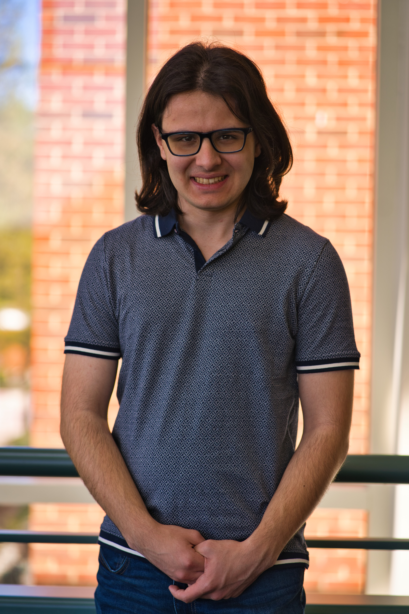

I am a second-year Ph.D. student in Computer Science with research interests at the intersection of applied mathematics and scientific computing. My work focuses primarily on designing mathematically grounded algorithms for large-scale inverse problems.
From a young age, I have had a passion for mathematics and how I could apply it to make sense of the world around me. As an undergraduate student, I attended George Mason University, where I studied computer science, as I felt it would be both practical and highly versatile. I believe we are living through a technological revolution - with the world wide web being just a few decades old and AI chatbots being just a few years old, new technologies are bound to appear in the future, and as I continue my journey, I would like to contribute to research that will be a part of this revolution.
In my spare time, I enjoy running and working out. I also enjoy a good puzzle, such as a Rubik's cube.
Department of Computer Science
Virginia Tech
Email: spopesc@vt.edu